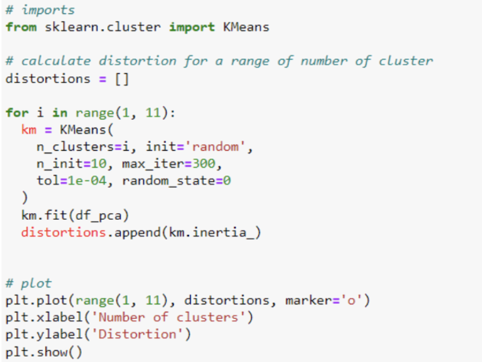
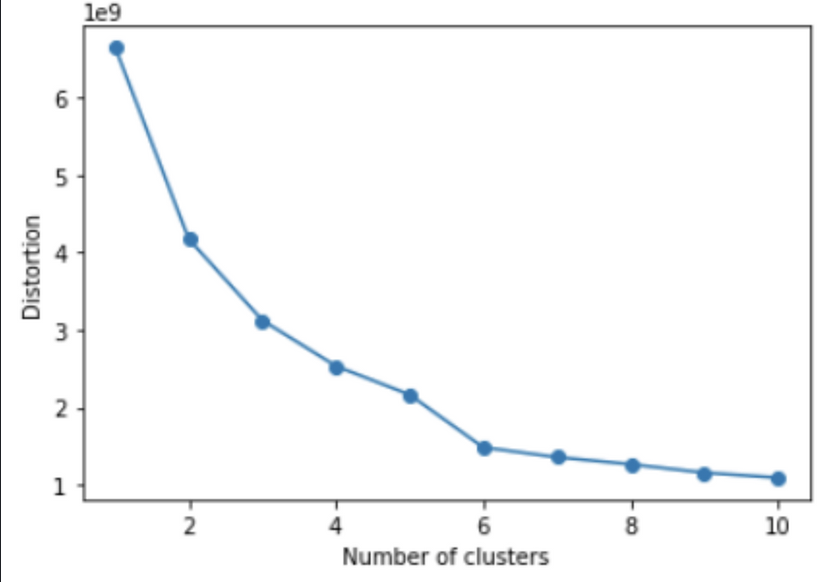

What is clustering and how does it work?
Clustering is the task of dividing the population or data points into a number of groups such that data points in the same groups are more similar to other data points in the same group and dissimilar to the data points in other groups. k-Means clustering is perhaps the most popular clustering algorithm. It is a partitioning method dividing the data space into K distinct clusters. It starts out with randomly-selected K cluster centers, and all data points are assigned to the nearest cluster centers. Then the cluster centers are re-calculated as the centroids of the newly formed clusters. The data points are re-assigned to the nearest cluster centers we just re-calculated. This process, assigning data points to the cluster centers and re-calculating the cluster centers, is repeated until the cluster centers stop moving. Machine learning algorithms can be broadly classified into two categories – supervised and unsupervised learning. There are other categories also like semi-supervised learning and reinforcement learning. But, most of the algorithms are classified as supervised or unsupervised learning. The difference between them happens because of the presence of a target variable. In unsupervised learning, there is no target variable. The dataset only has input variables which describe the data. This is called unsupervised learning.
Introduction to the Problem
This dataset contains a list of the most watched TV shows around the world with ratings, popularity, and other attributes. The data has been fetched from The Movie Database API. One of the problems that I wanted to work on with this dataset is which category TV shows are more popular? I think this is a very common problem for individuals when it comes to choosing what to watch.
Introduction to Data
The data used for this project provides information on most TV shows watched and its rating found through Kaggle. There is one file in the dataset which is called “data_TV.scv”, which contains attributes like
1. firstairdate - The date when the show was first aired on television
2. origin_country - The country where the show was created / originates from
3. original_language - The original language of the show
4. name - Name of the show in English. Note that names in original language are not included in this dataset.
5. popularity - A metric that measures how popular a TV show is based on consumer views
6. vote_average - Average of the total number of votes the show received
7. vote_count - The number of votes the show received
8. overview - A brief description of the show
Pre-processing the Data
The first step I took was to check the source behind the data and found that the database was created for the purpose of learning clustering methods. Then I went through the .csv file and checked for datatypes if they need to be converted. After that I checked for all the null values and there were 75 null values in total so I was able to drop the null values before checking any missing values. Then I checked for any missing values but no missing values were found. Next, I was able to use the df.info() to print out information about the database. Then, I used the df.describe() to output all the numerical values which I can later use to compare any values to figure out my solution. Lastly, I checked for all the features that were assigned to categorical variables for the object data type. I checked this because it will help me in my visualization process to compare different categorical variables.
Data Understanding/Visualization
Now that we have covered what clustering means and what the two types of clustering are, let's try to understand the data I will work with to cluster. So the next thing I did was to find some best features that my dataset will be clustered with. In order to do so, I used subplot to find a feature that related to original_language, vote_average, and origin_country. After plotting these graphs I was able to figure that the highest number for original language was English, average vote was 7.4 and the origin country for movies was the United States.
Modeling
For the modeling section of the post, I wanted to use the KMeans method in order to cluster the data and provide a visualization through a graph. We are going to first use the elbow method to see where the optimal k value is for our dataset.
This code creates our kmeans graph based on the set X values in the dataset. So let's look at what the actual graph looks like below:
Looking at our KMeans output, we can see that it is a pretty evenly distributed graph with a higher k value. There is a sharper decline with less of a k value so we could put the optimal number of clusters at either 2 or 3.
Storytelling (Clustering Analysis)
Based on the problem on which category TV shows are more popular I was able to figure out the solution using clustering analysis.
.png)
Impact Section
From this dataset, some interesting patterns that came out were the original languages that most movies are watched is English, the average vote for the movies was 7.4 and the origin country that most movies originated is the United States. This will help the audience to get to know which countries and languages will help them to find the best movies.